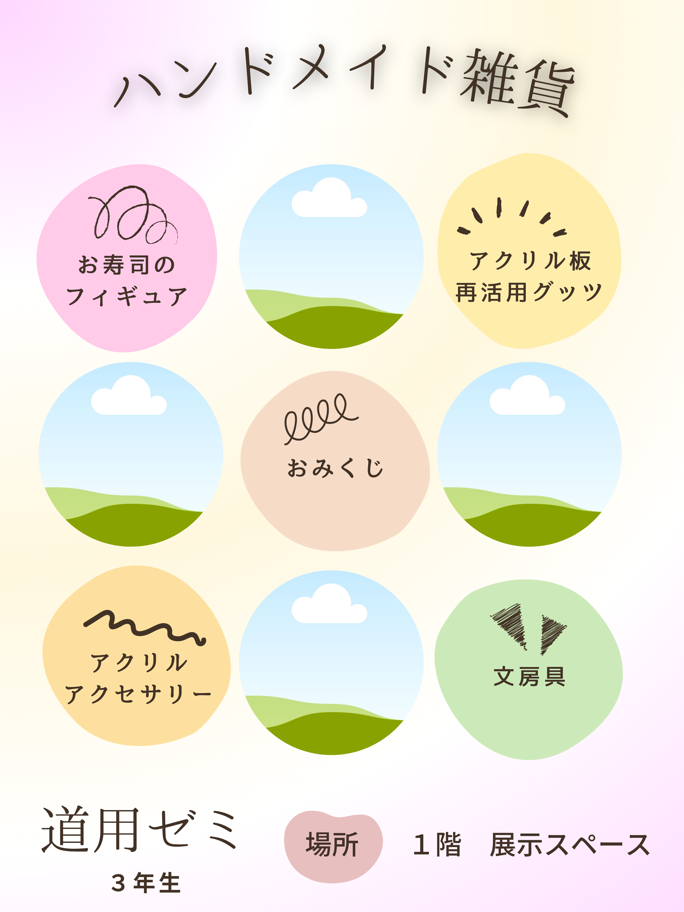
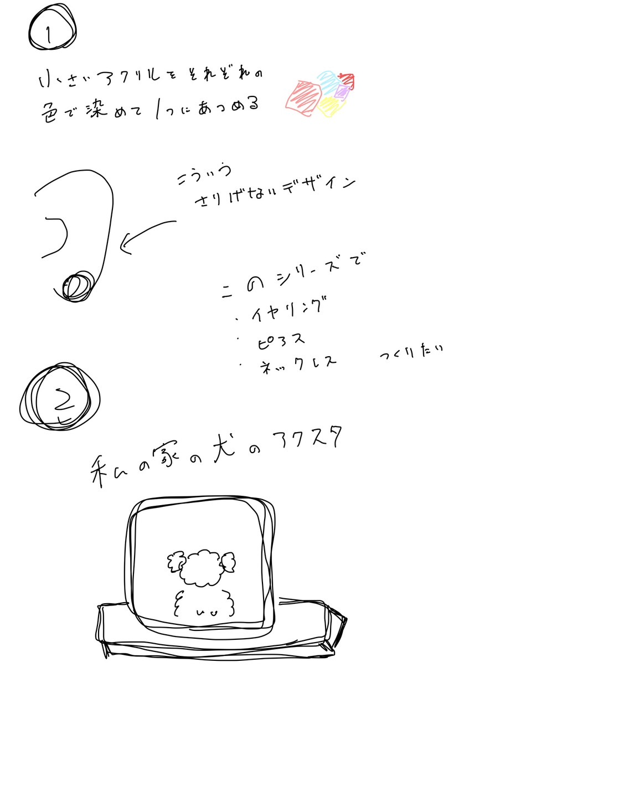
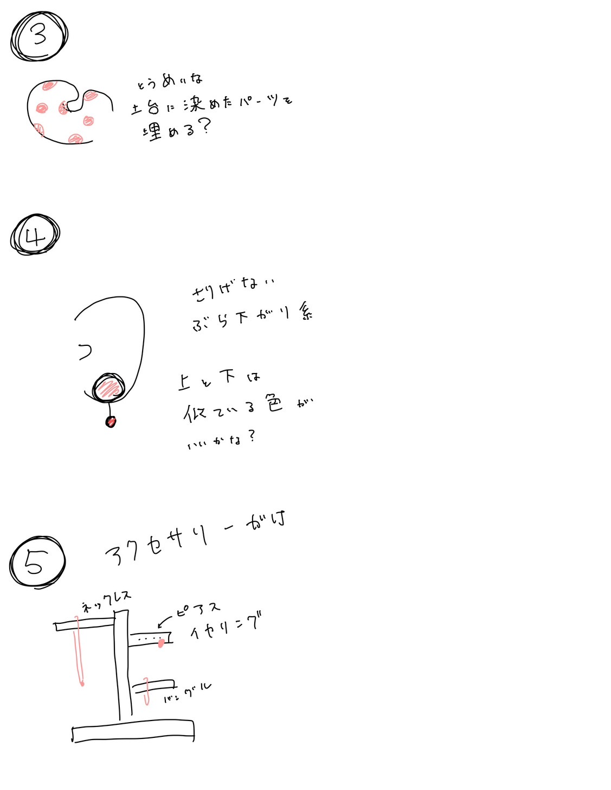
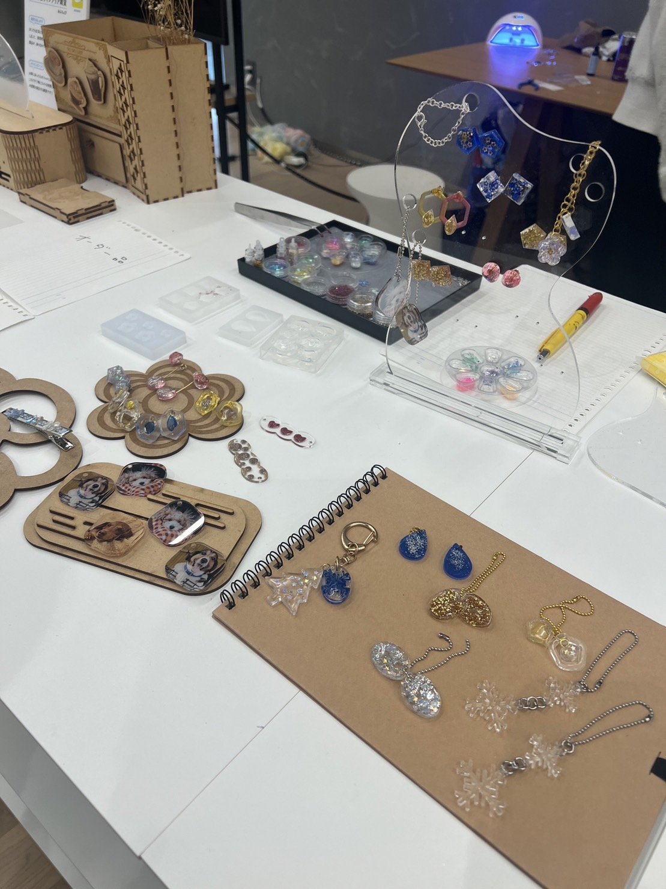
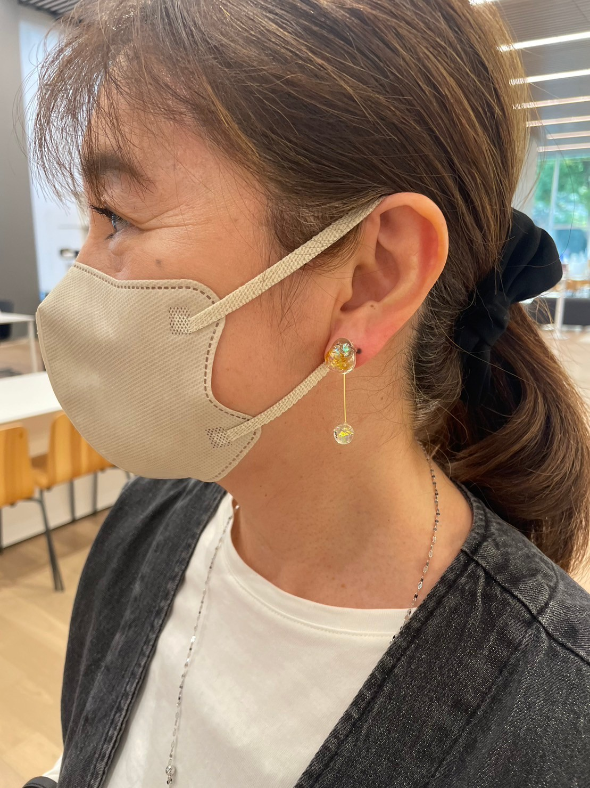
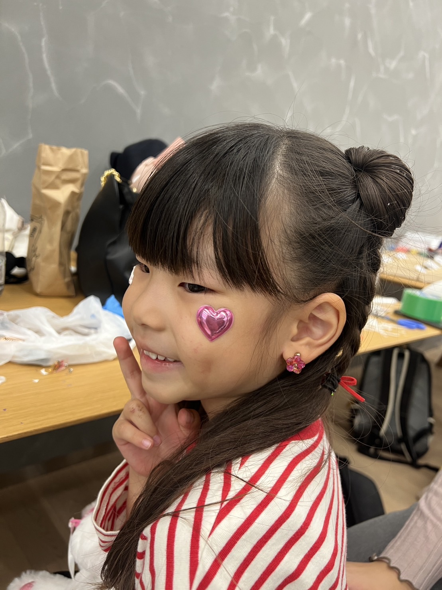
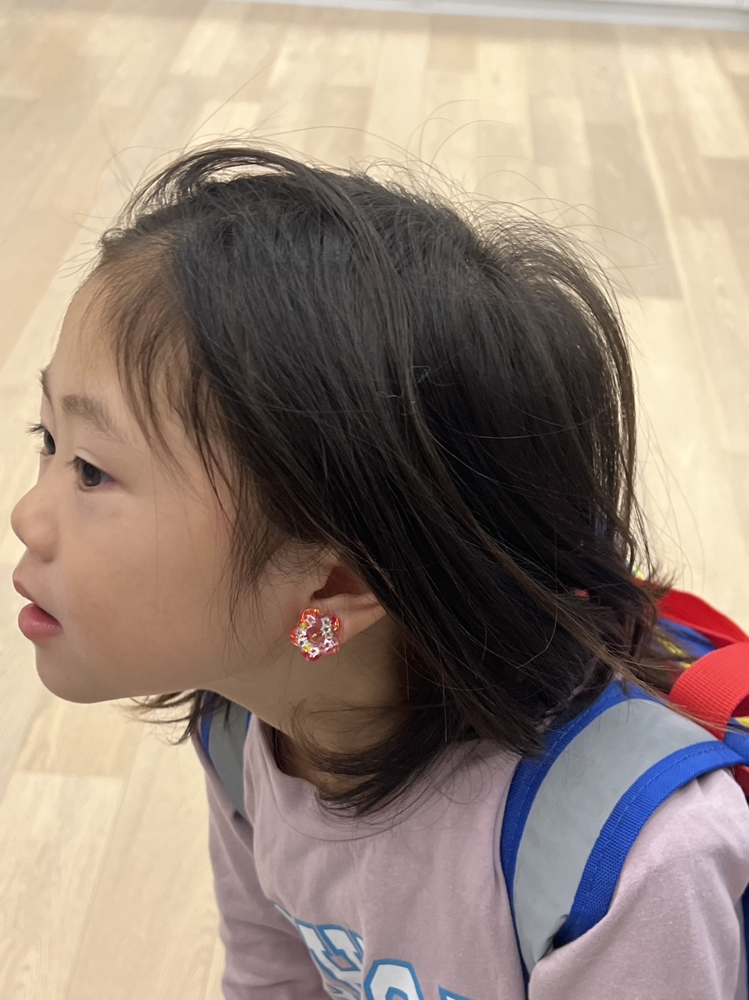
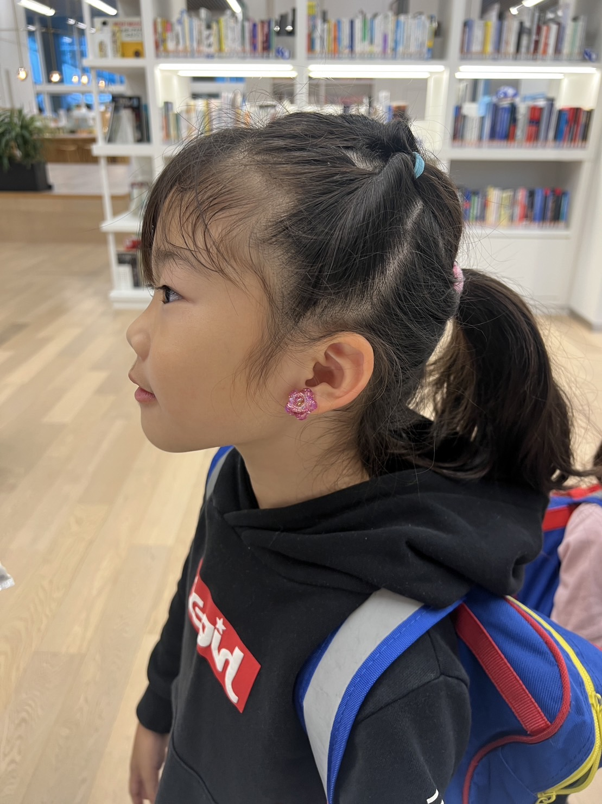
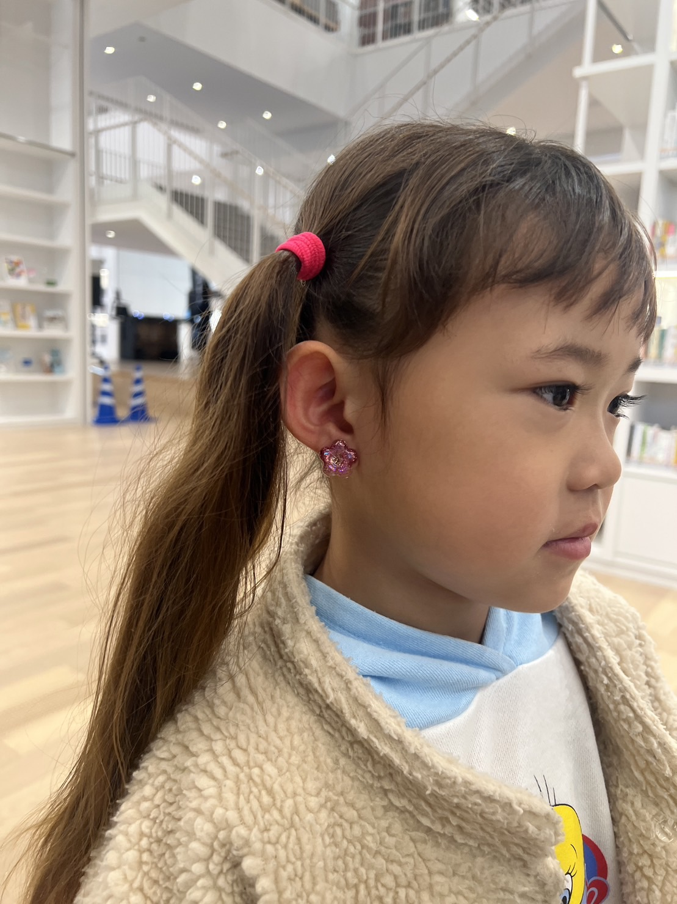

学園祭
やることリスト
| 進行 | 内容 | 詳細 |
| 済 | 出店の応募 | ゼミとして出店 |
| 済 | 企画書の提出 | 期限 : 7月31日 word / PDF |
| 済 | 説明会への参加 | |
| 済 | チラシの作成 | |
| 済 | 作品の作成 | ページ下部に作成済み商品まとめ |
済＝完了 ◎＝進行中 ×＝これから
チラシ作成

販売内容
商品下絵


当日の写真
※お写真の掲載は許可を貰っています。






収益
1日目 4000-3200=800円
2日目 6500-2420=4080円
(1日目の方に2日目も使う材料費も入っているため、1日目の方がマイナスが大きい)
全体を通して
今回、私が中心になってゼミの出店をして、いろいろなことを感じた。
今回の出店は、それぞれの個人が道用ゼミとしてバラバラに商品を出していた。
そのために、意思疎通を測ることが難しかった。
また、自由人が多いためか、撤退時間を守ってくれない人も多く、迷惑をかけてしまったと感じている。
改めて、グループをまとめることの大変さを学んだ。
商品を販売してみて
私たちは、最初、事前に造った商品のみを販売する予定であったが、
お客さんが少なく初日の初めの段階でもしかして、売れないのでは？？という焦りが出てきた。
そのため、商品を値下げし（全品300円→200円）、オリジナルの商品（300円）をその場で作れるような体制を作った。
その理由の中に、商品に自信がなかったという物もあったように思う。
オリジナル商品を作れるようにしたのは、成功だったように思う。
実際に、当日の写真に乗せている写真の方々は、全員オリジナル商品を購入してくださった方。
全員がうれしそうな表情で、商品を受け取ってくれてモノづくりの楽しさを改めて認識した。
その一方で、値下げしたことはよくないことだったと考えている。
何故なら、お客さんが少なかったのは、時間が早かったためだったからである。
実際、12時過ぎたあたりからお客さんが増えてきた。
その反省を生かして、2日目は値上げをしが、（アクセサリー300円 キーホルダー200円 オリジナル500円）
1日目と同じ様に皆さん購入してくださった。
安ければいいというものではないと学ぶことができた。
値段設定の難しさを今回、実感することができた。
2日間を通して、物を売ることの難しさを学ぶことができ、自分の作品に自信をえることができた
大変有意義な2日間であったと感じている。